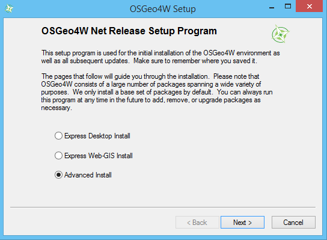

Installation Guide
Library Installation
Microsoft Windows
You can choose between 32bit or 64bit installation depending on your machine.
- All required downloads
- from https://www.python.org/downloads/windows/
- python 2.7.x Windows x86 MSI installer (32bit) or Windows x86-64 MSI installer (64bit)
- from http://www.lfd.uci.edu/~gohlke/pythonlibs/ you need to choose between py2.7.exe (32bit) or amd64-py2.7.exe extensions.
- Scipy-stack-14.x
- scikit-image-0.x
- scikit-learn-0.x
- ephem-3.x
- from http://trac.osgeo.org/osgeo4w/:
- OSGeo4W network installer (32bit or 64bit)
- Installation
Install all the executables in sequence.
- In OSGeo4w network installer select advanced installation
- 
- and add the following packages:
- otb-bin
- otb-python
- qgis: QGIS Desktop
- Go to Control Panel, System, Windows Advanced System Settings and set the following Environment Variable:
- Variable name: PYTHONPATH
- Variable value: C:/Python27/Lib/site-packages;C:/OSGeo4W64/apps/Python27/Lib/site-packages (for 64bit) or C:/Python27/Lib/site-packages;C:/OSGeo4W/apps/Python27/Lib/site-packages (for 32bit)
Ubuntu/Debian
- Gdal, OpenCV, Sklearn, Skimage, QGIS, PyEphem Installation
Procedure to install all the required software in a few steps; open your terminal and type the following code:
$ sudo apt-get install git python-gdal python-opencv python-sklearn python-skimage qgis $ wget http://pypi.python.org/packages/source/p/pyephem/pyephem-3.7.5.1.tar.gz $ tar zxvf pyephem-3.7.5.1.tar.gz $ sudo python pyephem-3.7.5.1/setup.py install
(old but still supported Ubuntu or Debian versions like Ubuntu 12.04 LTS or Debian 6.x do not include python-skimage into the official repository. It is recommended to install it through an external repository following this guide: http://neuro.debian.net/install_pkg.html?p=python-sklearn)
- OTB Installation
If your Distro is compatible, you can use ubuntugis repository check it out at https://launchpad.net/~ubuntugis/+archive/ubuntugis
$ sudo apt-get install software-properties-common $ sudo add-apt-repository ppa:ubuntugis/ubuntugis-unstable $ sudo apt-get update $ sudo apt-get install python-otb
- OTB Compiling
If ubuntugis repository is not compatible with your version you have to compile OTB
$ sudo apt-get install build-essential cmake mercurial libinsighttoolkit4-dev libkml-dev swig libopenjpeg-dev libgdal-dev libtiff5-dev libgeotiff-dev cmake-curses-gui $ hg clone http://hg.orfeo-toolbox.org/OTB $ mv OTB OTB-src && mkdir OTB && mv OTB-src OTB && mkdir OTB/OTB-bin && cd OTB/OTB-bin $ ccmake ../OTB-src
- Using the ccmake interface just opened, you’re just a few steps away to complete the makefile configuration:
- Go to “OTB_WRAP_PYTHON” value and press [Enter] to change value to “ON”.
- Press [t] to toggle advanced mode and go to “OTB_USE_EXTERNAL_LIBKML” value and press [Enter] to change value to “ON” (this step is necessary to avoid a well-known compilation bug, it might be fixed in the future versions of OTB).
- Press [c] to start configure.
- Wait configuration and press [g] to save the configuration and quit.
Now the challenging things are done. Run make and then the installation command:
$ make $ sudo make install
After the installation you have to include the C OTB libraries and python OTB modules paths into the system path:
$ sudo sh -c 'echo "/usr/local/lib/otb" > /etc/ld.so.conf.d/otb.conf' $ sudo ln -s /usr/local/lib/otb/python/* /usr/lib/pymodules/python2.7/ $ sudo ldconfig
Sensum Plugin Code
Get current version from git:
git clone https://github.com/dgaleazzo/sensum_plugin
- Copy sensum_plugin folder into:
- MS Windows: HOMEPATH%/.qgis2/python/plugins
- Linux: ~/.qgis2/python/plugings